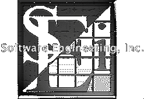

|
Last Updated: 3/10/98
Software Engineering, Inc. is a company dedicated to creating excellent
quality software for Microsoft Windows. We have established a high standard
of excellence for our organization and we are committed to achieving that
goal through skill, honesty, integrity, relentless determination, and a
meticulous attention to detail.
Specializing in C and C++ object oriented design, our highly skilled team
of developers has many years of experience writing software. The experience
base at Software Engineering spans many hardware platforms (including mainframes)
and operating systems, including Apple, Unix, DOS, and Windows (since version 1.0).
We have extensive combined experience in many specialized genres of
programming such as Computer Aided Design, network communications, diagnostic
tools, monitoring systems, games, client/server applications, SQL, and image processing.
We have developed a powerful new CAD program for Microsoft Windows called
Symmetrica™. The extensible nature of its object oriented design allows
us to easily derive new custom CAD applications from the Symmetrica CAD engine.
The Symmetrica engine can be readily molded to accommodate any specialized CAD
application. We would like to develop a new CAD application for you.
If you have software development needs, we would like to speak with you.
For more information about custom software development for Windows,
please contact our customer support
department.
Software Engineering, Inc.
Voice: 303-290-8756
|
| Purchasing A License | Table Of Contents | Copyright Information |